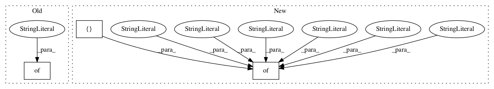

0de144d2ca3efc731c6f60272f92474e6a6e5432,tests/setup.py,,alexnet,#Any#Any#Any#,84

Before Change
m = model.alexnet(images, seed=SEED, **kwargs)
loss = tf.nn.sparse_softmax_cross_entropy_with_logits(logits=m.output, labels=labels)
graph = tf.get_default_graph()
targets = {
// "conv1": graph.get_tensor_by_name("/".join([scope, "conv1/pool:0"])),
// "conv2": graph.get_tensor_by_name("/".join([scope, "conv2/pool:0"])),
// "conv3": graph.get_tensor_by_name("/".join([scope, "conv3/relu:0"])),
// "conv4": graph.get_tensor_by_name("/".join([scope, "conv4/relu:0"])),
// "conv5": graph.get_tensor_by_name("/".join([scope, "conv5/pool:0"])),
// "fc6": graph.get_tensor_by_name("/".join([scope, "fc6/relu:0"])),
// "fc7": graph.get_tensor_by_name("/".join([scope, "fc7/relu:0"])),
// "fc8": graph.get_tensor_by_name("/".join([scope, "fc8/fc:0"])),
"loss": tf.reduce_mean(loss)
}
return targets
def get_imagenet():
After Change
m = model.alexnet(images, seed=SEED, **kwargs)
loss = tf.nn.sparse_softmax_cross_entropy_with_logits(logits=m.output, labels=labels)
graph = tf.get_default_graph()
targets = {"conv1": graph.get_tensor_by_name("/".join([scope, "conv1/output:0"])),
"conv2": graph.get_tensor_by_name("/".join([scope, "conv2/output:0"])),
"conv3": graph.get_tensor_by_name("/".join([scope, "conv3/output:0"])),
"conv4": graph.get_tensor_by_name("/".join([scope, "conv4/output:0"])),
"conv5": graph.get_tensor_by_name("/".join([scope, "conv5/output:0"])),
"fc6": graph.get_tensor_by_name("/".join([scope, "fc6/output:0"])),
"fc7": graph.get_tensor_by_name("/".join([scope, "fc7/output:0"])),
"fc8": graph.get_tensor_by_name("/".join([scope, "fc8/output:0"])),
"loss": tf.reduce_mean(loss)
}
return targets
def get_imagenet():
In pattern: SUPERPATTERN
Frequency: 3
Non-data size: 3
Instances
Project Name: neuroailab/tnn
Commit Name: 0de144d2ca3efc731c6f60272f92474e6a6e5432
Time:
Author: null
File Name: tests/setup.py
Class Name:
Method Name: alexnet
Project Name: asyml/texar
Commit Name: cbf6039c8b6ebddd501258530f367761406c9366
Time:
Author: null
File Name: texar/modules/berts/berts.py
Class Name: BertBase
Method Name: default_hparams
Project Name: asyml/texar
Commit Name: b8e0a40cf9fc8b74771c270d274d7d2ee7d959d3
Time:
Author: null
File Name: texar/tf/modules/pretrained/gpt2_test.py
Class Name: GPT2UtilsTest
Method Name: test_load_pretrained_gpt2_AND_transform_gpt2_to_texar_config